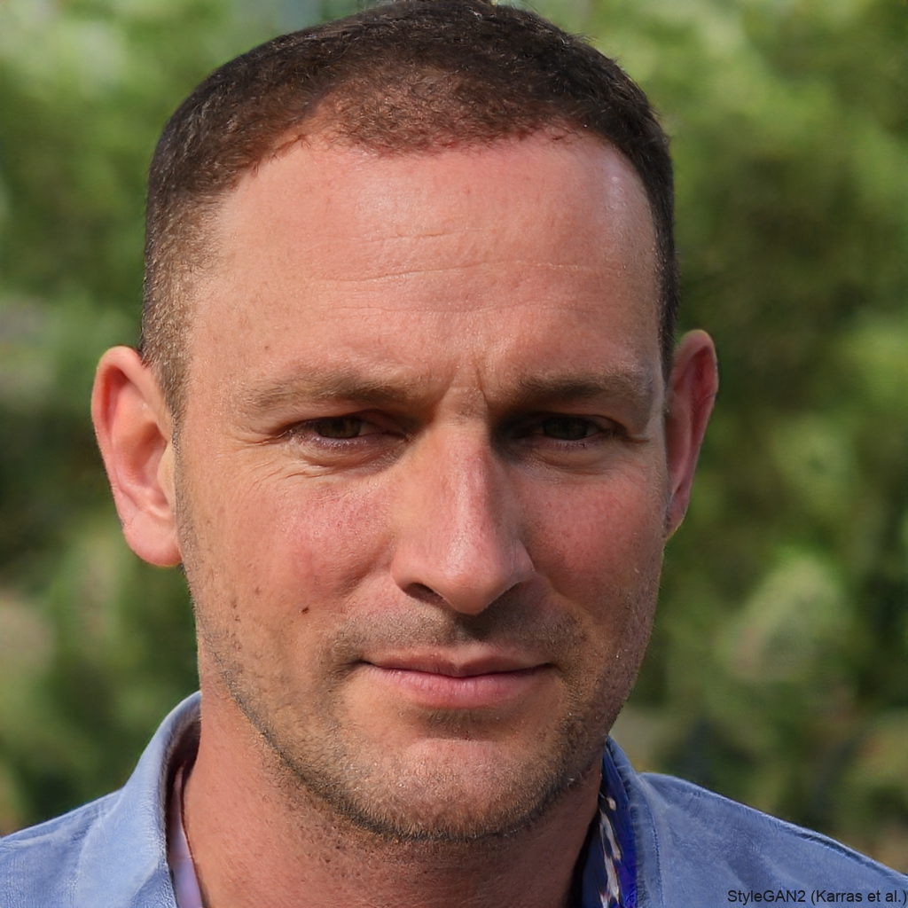
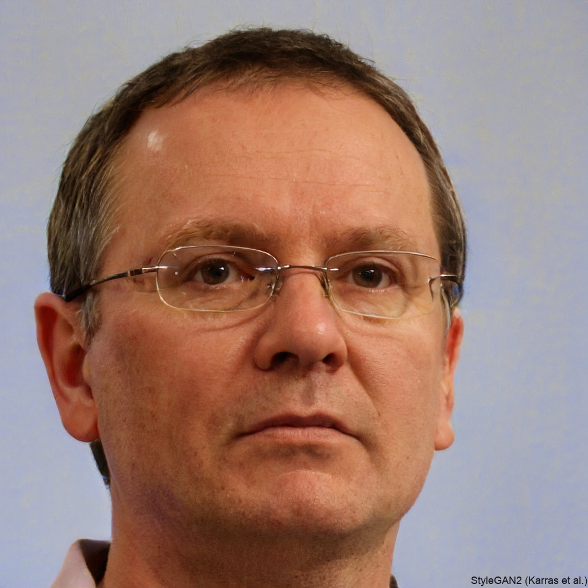

Speakers
- Cleve Ash
- Gennet Alderson
- Sam Bankman Freid (Unavailable)
- Max Jones
- Steven Tompson
Back

Name:Cleve Ash
Company:inference.ai
Position:CFO, Co-Founder
Bio:inference.ai is dedicated to commercializing safe and affordable AI. Cleve has been working for the startup since its initiation in 2019.
Talk:inference, our AI startup journey, Asimov and Beyond: the angers of AI
Name:Gennet Alderson
Company:Nasa
Position:Senior Engineer
Bio:Gennet has worked at Nasa for over 15 years. She was part of the Perseverance Mars Mission team and the Juice probe. She is here to talk about her experiences engineering craft to travel billions of miles in the void of space.
Talk:3 Easy Steps to Launch a Space Probe, Juice: The In and the Out

Name:Max Jones
Company:Abundant Energy
Position:Engineer
Bio:Max has spent his career working in the energy sector. Previously working for BP, he was hired by a renewable energy startup called Abundant Energyin 2018 and has been working there since.
Talk:The Solar Success Story; The Geopolitics of Manufacturing Solar
Name:Steven Tompson
Company:National Networking and Communications Trust
Position:Engineer
Bio:Steven's work in the telecommunications industry has allowed him to have the opportunity to work with telecomms satelites. He is here today to talk about his experiences coordinating the machines high above the sky to deliver internet.
Talk:Network Protocols: An Extensive Guide; Network Protocols 101